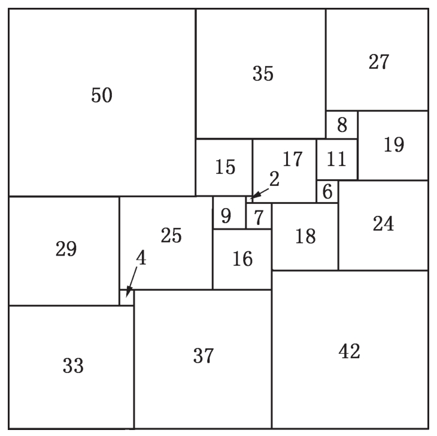
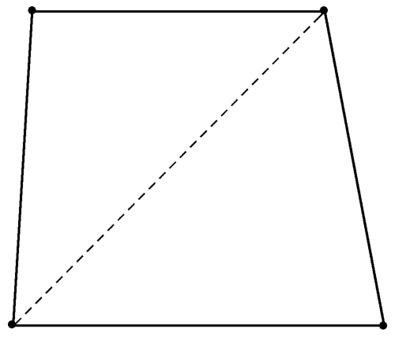

在匈牙利，对于一位年轻的犹太数学家来说，他的学术前途是十分渺茫的，即使像保罗·爱多士那样出色的人。塞凯赖什的父母意识到这一点，坚持让他们的儿子学习化学工程以便将来能接管家里的皮革厂。塞凯赖什听从了父母的建议而把数学作为一项浪漫的业余爱好。瓦佐尼也有同样的考虑，但他不该告诉爱多士，爱多士听后很震惊并威胁道：“我要躲起来，等你走进理工大学的门口时，就射死你。”“争端就此解决。”瓦佐尼说道。
爱多士强烈支持他的朋友们从事数学并不表示他对匈牙利和欧洲的一般局势抱有天真的乐观。当他同圈子里的人去布达山郊游时，在不探讨数学问题的时候，他们也时常分析正在恶化的匈牙利政治形势。逐渐地，爱多士的犹太朋友们——其中许多都是左派活跃分子——感到他们像是在监狱的围墙内“学习约当定理”。在街上他们遭人恫吓，他们被逐出大学校门，或被警察监视。“自1925年以来，我和我的父母就很清楚，我必须出国。”爱多士回忆道。当他一完成博士论文，就开始准备动身。
爱多士的父母本来希望他到德国继续学业。但是亲眼目睹了纳粹分子的嚣张气焰后，他们知道这是不可能的。在他的论文导师的建议下，爱多士写信给英国著名的数论家路易斯·莫德尔，请求帮助他争取奖学金。爱多士申请奖学金的材料中包括他一篇论文的复印件，文中有他对舒尔关于过剩数猜想的一个简单证明，这篇文章使他获得了由英国皇家学会提供的曼彻斯特大学的奖学金，数额为100英镑。
1934年，年仅21岁的爱多士获得帕兹马尼大学的博士学位，是有史以来获得该学位的最年轻者之一。同年9月，爱多士登上列车，第一次离开了匈牙利。“他甚至不知如何在火车上对付一日三餐及其他琐事。”安妮·达文波特（Anne Davenport）说道。她与她的丈夫，一位剑桥大学的数学家，后来一道成为爱多士亲密的朋友。
尽管旅途的乏味令爱多士感到有些疲惫，但这并没有影响他要会见尽可能多的数学家的愿望。在去曼彻斯特的路上，爱多士在瑞士稍作停留，前去拜访乔治·波利亚（George Pólya），他是一本著名数学问题集的作者之一。这本书曾是爱多士他们在无名氏铜像下聚会时讨论的话题。
1934年10月1日——即使50多年后爱多士也能毫不费力地准确说出这个日子——爱多士乘火车抵达剑桥站，这是他到达曼彻斯特前的又一次短暂访问。虽说是第一次旅行，爱多士却尽可能地挤进了尽可能多的数学中心。在车站，爱多士碰到了哈罗德·达文波特和后来成为爱多士重要合作者的年轻德国数学家理查德·拉多。拉多是舒尔最得意的学生之一，当希特勒上台执政时，作为一名犹太人，他被迫逃离德国。爱多士与拉多就数学问题已有1年多的通信往来。爱多士告诉拉多他关于拉姆齐定理在无穷情形下的一个猜想，拉多回信驳斥了它。因此，当3人在车站相遇时，他们“立刻来到三一学院并做了第一次长时间的数学探讨”，拉多回忆道。在餐厅里爱多士发现他自己还从来没有给面包片涂过黄油。
在剑桥大学，爱多士以一个有趣的猜想挑战了他所遇到的数学家，这个猜想本身没有多大的数学价值。事实上，后来证明它是不正确的。但是，如同爱多士的许多猜想一样，它改变了那些致力于此猜想的数学家的命运。塞德里克·史密斯（Cedric Smith）就是其中之一。他后来有些夸张却不无道理地谈道，就像一只在美国蒙大拿的蝴蝶扇动几下翅膀也许会在印度引起一阵季风，爱多士小小的猜想，可能会改变西方文明的命运。
这个决定命运的猜想涉及一种被称为分割的几何难题。简单地说，一个分割就是将一个图形分成几个小的图形，就像拼板玩具或埃舍尔(1)印板。人类已经提出许多高明的分割方法，例如分割后的各个部分重新拼成另外一个图形，分割一个三角形使其重新组成一个五边形就是这样的例子。爱多士的分割问题，至少从表面上来看，比这些要简单得多。将一个正方形分成许多小正方形是很容易做到的，比如，棋盘就是将一个正方形分成了64个小正方形。但是如果要求这些小正方形彼此都不相同，结果会怎样呢？爱多士猜测这样的分割是不可能的。也就是说，一个正方形如要分成一些更小的正方形，则至少会有两个完全相同。
这样猜测的根据是什么呢？为什么有些人能直觉地感到一个正方形怎样分割是可能的，怎样分割是不可能的？通常说来这种直觉依赖于长时间漫不经心的思考和反复试验。尽管数学证明靠的是纯逻辑，但从广义上来说，数学本身却是一门观察性的科学。对于上述猜想，爱多士也许是受其首先观察到的三维问题影响。令人惊奇的是，很容易证明出一个立方体不能够分成有限个彼此不同的小立方体。
假设一个立方体可以分成大小不同的小立方体，那么这个立方体的每个面就会被分成大小不同的正方形，它们是外层立方体的底部。集中考察其中的一个面，尤其是面上最小的正方形。它不能位于这个面的一角，否则沿着这个小正方形的两条内边不能再有较大的正方形，除非它们完全重合。它也不能沿着这个面的一条边，因为如果是这样的话，这个小正方形将被夹在2个较大正方形中间，而与这个小正方形相邻的2个较大正方形伸出来的部分将围成一个宽为小正方形边长的区域。只有用更小的正方形才能填满这个区域，但是根据假设，不存在这样的正方形。因此，这个小立方体只能朝向面的中间部分，四周由较大立方体表面的正方形包围着。这意味着小立方体的顶部就像回廊环绕的院子，周围是与它相邻立方体的表面所围成。而且它的顶部就像最初的面一样，必须有更小的立方体覆盖。不断重复上述论证过程：这些立方体中最小的必须有更小的立方体将它覆盖，一直继续下去，就像斯威夫特（Jonathan Swift）的跳蚤歌：
博物学家观察到一只跳蚤
它被小跳蚤们咬食
小跳蚤又成为更小跳蚤的佳肴
如此下去，永无穷尽。
因此，一个立方体不能分成有限个彼此不同的小立方体。
尽管上述论证并不适用于二维的情形，但是爱多士的几何直觉告诉他一个正方形进行类似的分割也是不可能的。一位名叫迪安（W. R. Dean）的剑桥大学的讲师听说了爱多士的猜想，并把它讲给那些经常听他谈论数学的中学生听。后来成为爱多士的朋友和合作者的阿瑟·斯通就是这些学生当中的一个，他对这个问题很感兴趣——但是直到很多年后，他才知道这个猜想来自爱多士。
斯通获得了剑桥三一学院的奖学金，在那里他和两位数学同行塞德里克·史密斯、布鲁克斯（R. Leonard Brooks）及一位正在攻读化学的威廉·图特（William Tutte）成为好友。史密斯后来写道：“尽管我们知道我们是真正的数学家，但我们思维开阔足以和一些纯化学家谈论。”除此之外，史密斯还是一位下棋高手。图特很快就设计独特的数学问题难住了他的新朋友，从而在他们中间赢得了数学声誉。
斯通回敬朋友们的方法是，告诉他们爱多士的猜想——把一个正方形分割成不同的小正方形，虽说斯通没有解决这个问题，但却使这个问题更具吸引力。他们4人在接下来的3年里猛攻这个猜想。
他们的第一个突破是发现一个矩形可以分割成大小不同的正方形，然而后来得知一位名叫莫伦（Moroń）的数学家已于1925年抢先发现了这个结果。他们发展了一种寻找此类矩形的奇妙方法，将问题简化为电路分析，最后找到了几个这样的矩形，可惜没有正方形。
尽管他们所发现的矩形看起来很吸引人，但是很长一段时间里他们没有丝毫进展。布鲁克斯把其中一个矩形分割成一些小正方形形成一个拼板玩具，然后让他的母亲去拼，他母亲成功地拼出一个矩形。令人惊奇的是，他母亲拼出来的矩形与原来布鲁克斯切割前的不是同一个，就好像给他母亲的是帝国大厦的拼板，她却拼出一个布鲁克林大桥的图案，一定有一些新的东西在起作用，但那是什么呢？
图特经过冥思苦想，最终给出了一个解释。布鲁克斯母亲的发现揭示了基本方程的一种对称性，它很快帮助这些学生获得了将一个正方形分割成不同小正方形的一种方法。爱多士是真的错了。然而不幸的是，他们再次被人抢了先，这一次是数学家斯普拉格（R. P. Sprague），领先不到一年。在以后的时间里，人们不遗余力地研究着这个众所周知的正方形分割问题。1978年，杜伊维斯丁（A. J. W. Duijvestin）发现，一个正方形分割成不同小正方形的最少个数是21。他的分割方法如图5-1所示。

图5-1 可被分割成大小不等的正方形的正方形个数最小值
1939年，英国学术界的就业前景不容乐观，史密斯记得曾偶然碰到了图特的一位导师达夫（Patrick Duff），他问史密斯：“你认识图特吗？”
“我认识。”史密斯答道。
“我们很担忧，他不太顺利。”
“他拿了一等成绩。”
“他的导师对他很失望。”
“哦，他的数学很好。”
“请证明。”达夫要求道。
史密斯给三一学院的行政官员写了一封信，他希望这是对图特能力的一个很好的证明。其中最重要的一个证据是图特否定了爱多士的猜想。三一学院的老资格学者们对此是否留下了印象，他们从来没有透露过。然而当第二次世界大战爆发时，图特应征参与了在布莱奇利庄园（Bletchley Park）的一个秘密军事计划，这里招来的都是英国最优秀的数学家。其中包括艾伦·图灵。很显然，史密斯的信引起了重视。
德国人所依仗的是由所谓的“谜语机”（Enigma Machine）产生的密码Ultra和Triton的安全性。当这种机器运送途经波兰时，波兰人对其做了检查，而他们对此设备的重新安装为布莱奇利庄园的数学家提供了一个理解密码的好机会。由于密码时常变动，所以破译密码是十分困难的。史密斯写道：“一个很合理的传闻说图特为密码的破译提供了重要的线索。”按照史学家保罗·约翰逊（Paul Johnson）所说，早在1940年，“破译Ultra密码为赢得不列颠战役的胜利起到了关键的作用；更为重要的是，1943年3月布莱奇利庄园的数学家们对Triton密码的破译使太平洋战场的胜利成为定局”。对德国潜水艇艇长电文的解密则使得盟军能够截获和捣毁德军的物资供应船只。即便不能说是英国的数学家使这场战争获得了胜利，也可以说是他们缩短了战争的进程。“文明得以拯救，而这一切始于爱多士的猜想，”史密斯说道，“即使爱多士猜想不是直接甚至间接地挽救了西方文明，它也像他的其他许多猜想一样发挥了应有作用：它开动了人的思维，改变了人的一生。”
在对剑桥大学简短访问之后，1934年10月爱多士转到曼彻斯特大学与莫德尔一起共事。20世纪初，莫德尔这位痴迷于数学的少年进了费城中心中学，他把全部心思用于从当地书摊低价淘来的数学旧书中，其中一些书含有供剑桥大学荣誉学位考试的富有启发性的考试题，这激发了莫德尔报考剑桥大学的决心。经过2年中学的拼搏后，莫德尔凑够去英格兰的旅费，到了英格兰他首先专心于剑桥大学奖学金的考试。莫德尔从此开始了数论这一崇高的职业生涯，关于数论的知识他大部分是自学的。因为在当时，英国数学家很少有搞数论的。莫德尔最著名的成就是“莫德尔猜想”，后来由法尔廷斯（Gerd Faltings）在1984年给出证明。这个猜想最终导致了安德鲁·怀尔斯对于费马猜想的证明。
1922年莫德尔接管数学系担任系主任时，曼彻斯特大学作为数学研究中心已经享有盛名，在他的领导下又进而发展为数学界的领导核心。莫德尔吸引众多的外国访问学者来曼彻斯特大学讲学。像爱多士一样，他们也是为了逃避本国愈演愈烈的暴行。拉多和达文波特在爱多士4年的停留期间也聚集到曼彻斯特，在此期间爱多士所写的论文大部分是数论方面的，从中可以看出莫德尔召集来的数学家的口味和爱多士本人的爱好。事实上，爱多士的前60篇文章——远比大多数数学家一生所写的还多——除2篇之外，其余全部是关于数论的。
爱多士早期论文中数论的主导地位表明了他对高斯称之为“数学皇后”的这一领域的钟爱，另一方面也暗示了即使是像数学这样的推理性学科也同样追求流行。爱多士对图论的兴趣可以追溯到和德奈什·柯尼希（Dénes König）做同学的时候。他对图论的近亲组合论的爱好，是由“幸福结局问题”引发的。大多数数学家瞧不起图论，把它视为“拓扑的贫民窟”，组合论则被贬为更不受重视的旁支，偶尔兴之所至前去做客还是不错的，但是没有有名望的数学家愿意长久地待在那里。
但爱多士甚至在关于数论方面的文章中也会塞进一些图论。1938年爱多士写了一篇题为“关于每一项都不能分成另外两项之积的整数列及一些相关问题”的论文，题目已经很好地表述出文章的内容，至少是尽可能地表达了。这篇文章值得称道的是爱多士把纯数论问题归结为寻找具有某种性质的图形问题，从而把没有什么共性的两个领域联系在一起，在这个过程中强调一个领域的同时也就赋予了另一个领域以尊重。这篇文章是很引人注意的，因为它是爱多士没能看出他自己工作真正意义的极少例子之一。
爱多士没有料到他在1938年关于整数列的这篇论文中所解决的图论问题竟然是极值图论这一新领域的范例。极值图论中最简单的例子是：考察有n个顶点的图形，若在这个图形中不能包含三角形，那么它最多能有多少条边？对于有4个顶点的图形，答案显然是4，4条边构成一个矩形；第5条边将是矩形的对角线，它把矩形分成2个三角形（参照图5-2）。

图5-2 在有4个顶点、5条边的图形中，必然有一个三角形
一般的情况是，如果边数至多是顶点数平方的四分之一，那么在这个图形中就不存在三角形，证明这个结果并不特别困难（虽然也超出了本书的范围），但是如果要避免的不是三角形而是四边形，证明就变得困难多了。两年来，保罗·图兰逐渐感到这些极值问题——与形成结构的极值有关的问题——是如此引人入胜、魅力无穷和丰富多彩，它们本身是很值得研究的。他的一篇论文构成了极值图论这一新学科的基础。爱多士成为极值图论的领袖之一，在这一领域里到处充满他的定理和猜想。但爱多士仍旧很自责，因为他一直觉得自己“本来应该发明”他所支配的这一领域。
爱多士会把他的失误和发明阴极射线管的物理学家克鲁克斯（Sir William Crookes）相提并论，克鲁克斯发现他的管子使密封在不透光封袋里的感光胶卷变模糊了。爱多士评论道，他根据这一观察得到的结论是人们不应该把胶卷放在阴极射线管附近。几年后，伦琴（Wilhelm Roentgen）以同样的方式弄坏了一些胶卷，而这个经历却导致他发明了X射线机。教训是什么呢？按照爱多士的看法，“适当的地点适当的时间还不够，你还应该在适当的时间有开放的思维”。
爱多士另外一篇在组合论中引用图论的文章是他在曼彻斯特与拉多和一位年轻的中国数学家柯召合写的论文，这篇文章包括了著名的爱多士-柯-拉多定理。这篇文章写于1938年，但部分地因为当时数学界对组合论缺乏兴趣，所以迟至1961年才得以发表，成为一篇“瞬时经典”。
爱多士已经习惯了乘车并且发现这是一个很好的工作地点，他经常访问剑桥大学和其他数学中心。他的门生博洛巴什（Béla Bollobás）在一本传记中写道：“自1934年以来，他几乎没有连续7个晚上在同一张床上睡过觉，他经常穿梭于曼彻斯特、剑桥、布里斯托尔、伦敦和其他大学之间。”
在曼彻斯特这些年，爱多士与那些身在匈牙利的朋友仍旧保持亲密的联系，爱多士每年至少要回家3次，即圣诞节、复活节和暑假。与欧洲的其他地方一样，布达佩斯的政治形势也逐渐变得严峻起来。到1936年，爱多士的朋友拉斯洛·奥尔帕尔已经被监禁10次，他回忆道：“很多人劝我去巴黎继续学业，巴黎这时正值人民阵线执政。爱多士叔叔［爱多士的父亲］帮我凑足了去巴黎的旅费和第一学期的生活费用。”瓦佐尼后来也搬到巴黎。埃丝特和塞凯赖什后来则逃到上海。
当电台报道变得越来越残酷时，爱多士开始计划逃离欧洲。1937年他申请普林斯顿高等研究所的研究基金，不料被他的同胞也是这个研究所的成员冯·诺伊曼告知：“尽管我们非常渴望你能前来访问”，但是时下没有经费。几个月后，下学年的拨款下来了，于是支付给爱多士1938—1939年访问期间的薪金1 500美元。
1938年3月，希特勒的军队席卷奥地利，“元首”宣布奥地利并入第三帝国。那年夏天爱多士拜访了埃丝特和塞凯赖什。他们正在风景如画的比克山度假，朋友们都意识到他们也许永远不能再相见了。尽管过去了60多年，回首往事，塞凯赖什仍然十分痛苦。“那残酷的年代，乌云笼罩在欧洲的上空，爱多士毫不怀疑地认为，这里无论有什么样的机会，我们也应该离开（一年后我们果真都离开了）。爱多士甚至比英国首相张伯伦还有远见。告别的时刻到了，望着渐渐消失在烟尘中的汽车，我和埃丝特默然相对，哽噎无言。”为了说明恐怖的真实性，塞凯赖什讲述了格林瓦尔德（Géza Grünwald）的故事，他遇见格林瓦尔德时后者正在匈牙利的比克山漫游。格林瓦尔德是他们的另一个亲密的朋友，也是爱多士早期合作者之一。“几年后他在一个劳工集中营里死去，不是死在战场上，而是死在自己的同胞手里。”
9月3日，希特勒竟然要求吞并苏台德地区，这是捷克斯洛伐克一个讲德语的地区。爱多士被震惊了。与他的朋友——其中许多后来都死于战争——还有他挚爱的阿普卡和安优卡匆匆告别之后，爱多士登上列车绕道而行，途经意大利、瑞士、巴黎，最后抵达伦敦。9月28日，爱多士乘“玛丽女王”号前往纽约，10月3日在去普林斯顿的路上经过埃利斯岛。以后的10年中，他再没有回过布达佩斯。
(1)埃舍尔（M. C. Escher，1898—1972），荷兰版画家。——译者